Follow a resident home, take the stand in court, investigate a murder or take the band onstage. Each section describes what you can do and where to find it.
Life in Story Mode
Who you meet depends on the hour
Follow someone through town and their destination tells you something about them. A market visit, a patrol beat and a watch aboard ship each have a place in the timetable.
A player and other characters on a Beaver Valley street.
Who goes where. The two-hour schedule assigns 391 identities to activities, journeys and group events. Citizens travel between public venues and their homes. Sailors on watch, people in custody and companions can have duties that take priority.
At home. A resident can start a shift somewhere other than home. Personal stashes keep deposited items across visits. Rest advances the world and heals surviving body parts. In local co-op, all living players must be ready before time speeds up.
Across town. Enter shops, apartments, the station and the sewers through their connecting doors. A fight can follow you through a doorway. Elevators and other physical doors still have their own entry conditions.
Characters & local co-op
Pick a face, bring a friend
Story and Versus share a searchable character roster. Browse citizens, soldiers, Slamfest wrestlers, naval crews, Zombie Chefs, police, A.S.S. agents and the Alder crime family.
Story character selection, with category tabs and a grid of individual portraits.
Character select. Choose a character for each participating local player. Inspect a character’s appearance, change individual body pieces and colours, or equip a saved outfit. Story supports up to four local player slots.
Conversation. Address someone nearby using the game’s voice input. Speaking characters draw on their identity and the current situation. Authored shows and story moments also use recorded dialogue. Zombie Chefs stay silent.
Companions. Residents can call out to someone nearby. Address a companion directly, ask an eligible resident to join, issue party orders and take followers through connected doors. An item you give someone changes hands. Companions can fight, lose equipment, take injuries and be detained.
Money & belongings
A wallet, a bank account and an overdue bill
Shop stock, your bag and your wallet are separate. Paying a cashier, trading with another character and putting something in home storage each move the actual item or money.
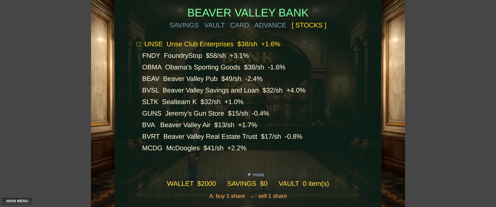
The Stocks tab at Beaver Valley Bank lists shares alongside the player’s wallet and savings.
At the bank. Deposit savings, keep physical items in the vault, apply for a credit card or take a cash advance. The exchange lists nineteen tickers, including FoundryStop, McDoogles and UNSE. Buying or selling shares changes your wallet balance. Using someone else’s credit card for an advance can trigger a theft report.
Debt collection. Unpaid balances can lead to a demand for payment, repossession and a civil case. The hospital can bill for treatment. Replacing a limb and buying a new outfit both cost money.
Clothes and gear. Preview outfits at the clothing shop. Wearables occupy inventory and can be taken off again. Uniformed identities can have separate on-duty and off-duty appearances.
Shops & loadouts
What goes in your bag
Guns, clothes, consumables and utility items can all belong to a character. A loadout can include something worn, something held and supplies kept in the bag.
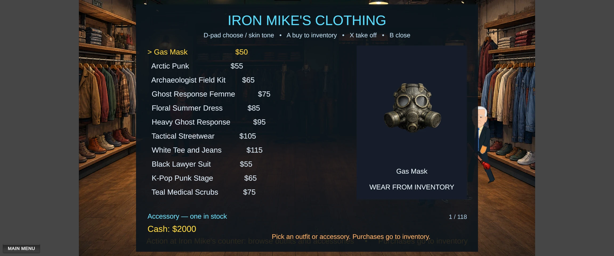
Iron Mike’s catalogue previews a gas mask and lists the other wearables on sale.
At the gun shop. Compatible weapons can switch between ammunition effects such as buckshot, slug, incendiary and corrosive rounds. Ghost-only ammunition has its own effect. The ammo display distinguishes buckshot, slug, incendiary, explosive, corrosive, brown and ghost-only effects.
At the clothing shop. Preview an outfit on the current character before buying. A purchase places a wearable in their inventory. Equip or remove it later and take it through doors with you.
Consumables. Intoxication builds as characters drink. Poisoning, fire and other status effects have their own symptoms and treatments. Alcohol can impair movement and make a character vomit or pass out.
The county hospital
Come in with the injury you took
The triage desk offers different services for wounds, ailments and lost limbs. A medical evacuation, a visit to the counter and resting at home have different outcomes.
At reception, Cutty’s list shows $30 wound treatment alongside care for ailments and replacement limbs.
Treatment. Staff can mend injured body parts, fit a cast or treat conditions such as acid burns. Plastic and cybernetic replacement limbs are available for missing parts.
Emergency care. The emergency dispatch system can send a crew to a patient. Ground and air response have their own boarding and transport behaviour. Medical custody can keep a patient in care.
The morgue. A body can be examined for a cause of death or cremated for an urn. A permanent Story casualty remains recorded when a player takes a new identity.
Police, court & detention
From the street to the witness stand
Jesse Ventura starts at the police station as chief, with Biden on intake. Other officers begin on patrol, at home or with the helicopter crew. Where the nearest officer is changes how an incident unfolds.
Judge, jurors and counsel take their places in the trial arena.
Police response. Witnesses can report an incident, and officers can act on what they see themselves. Dispatch, pursuit, arrest and booking connect the street to the station. Walking into another room leaves the incident active.
Court. Play a custom case from Court Mode or attend a Story trial. The courtroom assigns a judge, counsel, defendants, witnesses and jurors. Examination, argument, deliberation and sentencing have different roles for the people in the room.
Custody. A jailed character has a cell and a routine that includes meals, yard time and rest. Leaving custody without release can trigger an escape report. A.S.S. agents have their own duty roster and detention facility. Medical custody, police booking and ordinary travel each have different release conditions.
American Security Services
Inside the detention centre
The federal detention complex has an intake counter, holding cells, cellblock, showers, infirmary, mess and yard. Officers have duty assignments and appearances associated with their jobs.
A player in the detention centre corridor between the illuminated cells.
The duty roster. Two presidential guards have White House posts. The detention roster assigns thirteen field posts from the remaining eligible agents and rotates by elapsed game time.
Local and federal. Biden’s intake post and Chief Jesse Ventura belong to the Beaver Valley Police Department. A.S.S. has its own agents, facilities and aircraft.
The cellblock. Doors, cells and circulation spaces are part of the facility. Its grounds, intake and living quarters can be visited as distinct rooms.
Combat & injury
Fight on the same stretch of street
Line up your feet as well as your swing. A hand, a held weapon and an opponent’s guard occupy space in the scene. Losing an arm changes what that character can carry.
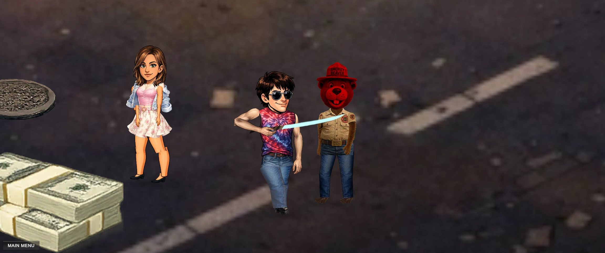
Jeremy strikes Smokey the Beaver in the street. Smokey flashes red as the hit lands.
In a fight. Switch between armed combat and unarmed moves. The optional twin-stick scheme gives the right stick control over weapon movement. Shields and off-hand items provide other ways to guard.
Weapons and the floor. Weapons can be picked up, dropped and thrown. A harpoon embeds and reels its target closer. Even a mop can pick up liquid or catch fire. Firearms use ammunition. Oil can catch fire, acid can corrode items and different fluids leave different hazards on the ground.
After a fight. The hospital treats wounds and ailments and offers plastic or cybernetic replacement limbs. Emergency medical crews can transport patients. A permanent Story death opens selection for a surviving replacement. Versus and dojo knockouts use their own rules.
Environmental damage
What survives a fight
Scenery has different kinds of damage. A loose prop can shatter, a flammable object can burn, and an authored building can enter a destroyed state that changes the location on later visits.
A strike hits an emplacement at the Grand FOB.
Inside a room. Broken props leave physical pieces. Surface fluids, including oil and acid, can interact with objects and people. Drunkenness, poison and fire have different effects and treatments.
Across the map. The Grand FOB and designated city targets have their own destruction records. Building demolition and the resulting loss of access apply to supported structures.
In the air. A shot that punctures the Beaver Valley Air cabin changes its pressure. A breach, oxygen supplies and an impending crash each have consequences for passengers. The flight has separate cabin and cockpit spaces.
Rhythm game
Beaver Machine Live
The bundled song library has 31 tracks, including Rockstar Ghost and #1 Superhit! Choose a part and play it on a four-lane note highway. The performance shares the screen with the chart, so you can see the band as you play.
Jeremy plays drums on “01 Boogerlicker (feat. Chingaway)”, earning a 30-note streak with all four musicians onstage.
Four parts. Vocals, guitar, bass and drums have separate charts. Each offers Easy, Normal and Expert difficulty. Vocals uses lane inputs like the other parts.
Play a song or a set. Press notes at the hit line and hold long notes to their ends. Timing earns Perfect, Great or Good judgements. A run of clean hits builds combo and multiplier. Results include score and accuracy, with personal bests stored for that song, part and difficulty.
Bring your own track. The library can import MP3, WAV, OGG, AIF and AIFF files and generate charts for them. Timing calibration and No Fail mode are available for practice.
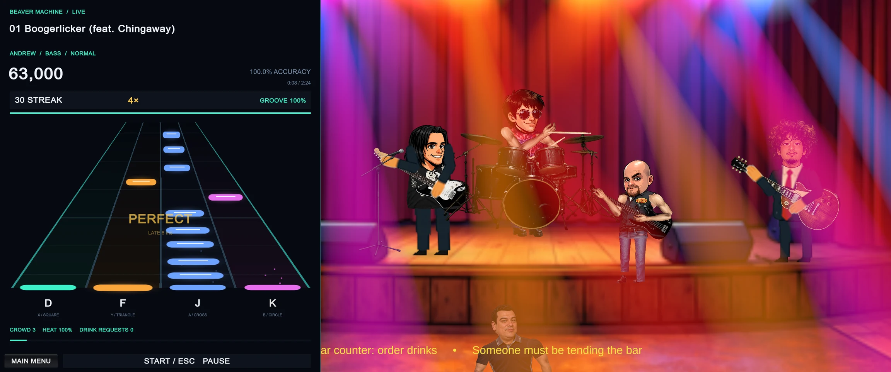
Andrew plays bass with a 30-note streak. Jeremy is seated at the drums behind him.Aki plays lead guitar as the band accompanies him onstage.
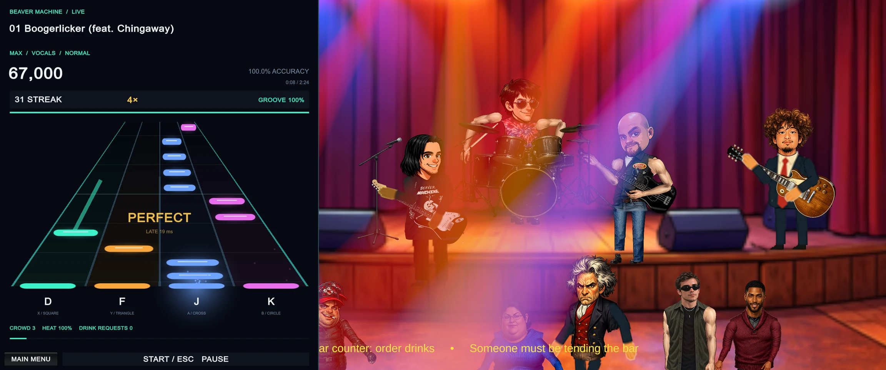
Max plays the four-lane vocals chart with the full band.
Music, television & theatre
Play the set or take a seat
Beaver Machine performs at the bar. At the UNSE club the D3@DH0R$3 show has its own music and dance staging. For a playable set, open Beaver Machine Live from the main menu.
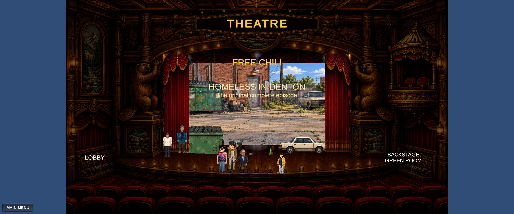
Free Chili stages the original Homeless in Denton episode in the theatre.
Music in town. At the bar, watch the drummer and guitarists follow the song. At the club, dancers move in formation. The wider cast includes the Stone City Orchestra, CuntPuncher and the Homeless in Denton duo E$E M and Poppa Capp.
The theatre. Buy a ticket for Damlet, A Midsummer Night’s Beaver, Waiting for Godam or Free Chili. Free Chili stages the original recording of Homeless in Denton’s first episode. Take an audience seat or enter the heckler box. At the lighting board you can change the house lights, stage wash and spotlight.
Television and Telethon. Dumpster Talk, Homeless in Denton and Put It In Your Mouth have authored appearances in the Valley. Telethon is a separate mode that can bring connected Twitch chat into the show.
Crossover stories
The cast outside the studio
Dumpster Talk has a set in town. Some encounters use a character’s live reply, others follow a staged exchange, and productions such as Free Chili use the original show recording.
Trump and Biden on the Bumnumba1 Telethon set.
ByteBinge. Throwing a ByteBinge Coin arms it. Its landing marks where the superhero will come down. ByteBinge goes after the thrower’s aggressors, and the impact can hurt bystanders.
Meanwhile. Campaign sequences move the action to other people and locations, including the White House, FoundryStop and the Valley’s television productions. Some sequences present a decision with different outcomes.
The shrimp ritual. The recipe in the crypt needs Shrimp, Chef Knife, Cooking Oil and Cooking Pot. Accept the offer to send Tyrone on his journey. Eating The Delicacy in the graveyard starts the associated world event. The Zombie Chefs stay silent.
Cabinets & casino
Sit down at a smaller game
James’s Barcade houses four playable cabinets. Across town the casino takes bets at its tables and machines.
The Ancient Dam pinball table in play at James’s Barcade.
A game at the counter. Walk up to a cabinet and pay its entry price from your character’s wallet. Use the machine’s own inputs to play, then return to the room when you leave the game.
James’s Barcade. Flush Line is a pipe puzzle, The Oregon River is a river journey and Sewer Beaver is a side-scrolling brawler. Beaver Valley Pinball adds a playable table with a plunger, flippers, missions and tilt.
The casino. Play blackjack, roulette, slots and poker. The poker table uses Texas Hold’em betting rounds. A separate Poker entry lets you set up a table from the main menu.
A dealt Texas Hold’em hand at the Beaver Valley casino.
Tabletop
Build a Beaver Slap deck
Beaver Slap plays on a five-by-five board. Its 447 card designs include characters, creatures, soldiers, items and lore cards. Choose a cell, check the card’s compass and see which neighbours it will face.
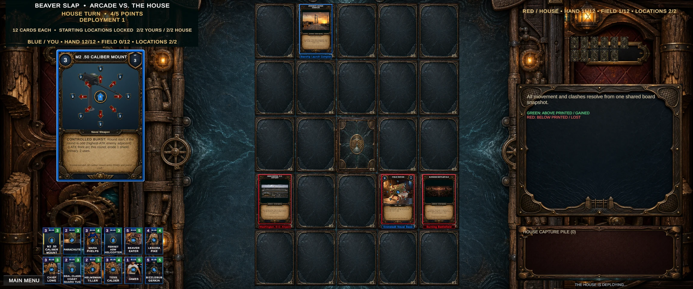
A Beaver Slap match in deployment, with the board, hand and card details visible.
Deployment and clashes. Directional attack and defence values matter when two cards meet. Some abilities trigger on deployment, entering a location, moving, capturing or being defeated. Location cards can modify the cards that occupy them.
The collection. Browse cards, inspect their abilities and put together a deck. Individual cards held in Story inventory have serial identities, so two copies of the same design are separate belongings.
Exhibition. The main-menu game deals decks for you and offers an exhibition against the house or local two-player play. You can inspect the cards before starting the match.
Investigations & story events
Follow the evidence at Bellweather House
Murder Mystery opens a playable case. Walk between rooms, examine Walter’s injuries, locate the weapon and ask guests what they witnessed. Your notebook records findings as you uncover them.
Jeremy meets a guest at the foot of the stairs in Bellweather House.
Test a statement. Compare the accounts with the physical evidence. The weapon carries a history of who handled it and can change rooms. Examining a body alone cannot identify the murderer.
Question the guests. The investigator can record statements in a notebook and compare them with physical evidence. Guests have their own information about the case. You can also protect people at the house as the investigation continues.
Local history. Ask the archaeologist about the origins of Beaver Valley to see a reconstruction of the ancient dam and the Beaver Eater. A first visit to the S-Files headquarters can start a separate initiation with a playable dodge trial.
Field bestiary
What is hunting you?
The sewer viper hunts along the floor. A larger snake can rise from its coils and strike, while an attack drone patrols overhead. Each changes its behaviour as the fight unfolds.
The Beaver Eater surfaces in the town street during a Story Mode encounter.
The Beaver Eater. The mobile boss starts as a close-range stalker. As it loses health it gains burrows, jumps and corrosive spit, then enters a frenzy with faster movement and a grab.
The large snake. It can wake, pursue, charge, bite, spit and tail-whip. The smaller sewer viper has its own strike and venom behaviour.
The attack drone. The drone can fly surveillance, target an actor or sweep the battlefield. The neutral boss has missile volleys and a ramming dive and can continue fighting after losing its guns.
Under the street. Sewer rats can leap, Blood Bats swoop, scorpions sting and spiders lay web patches. A giant spider can produce spiderlings in its boss room. The roach boss, The Thousand, changes its attacks as the encounter progresses.
In the water. The smaller alligator under UNSE and the full-sized species can swim, pursue and bite. A confirmed jaw hold can turn into a drag or a death roll.
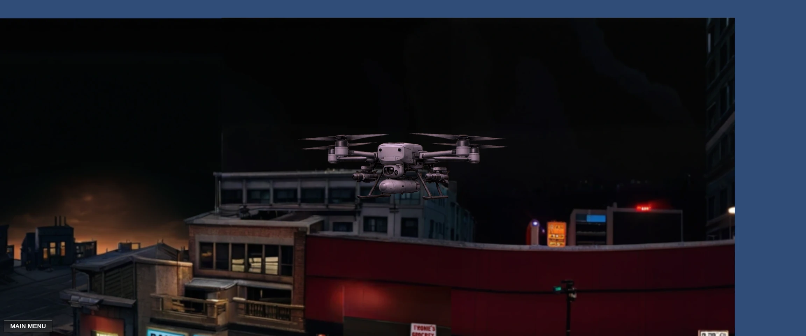
An attack drone hovers above the rooftops of Beaver Valley at night.
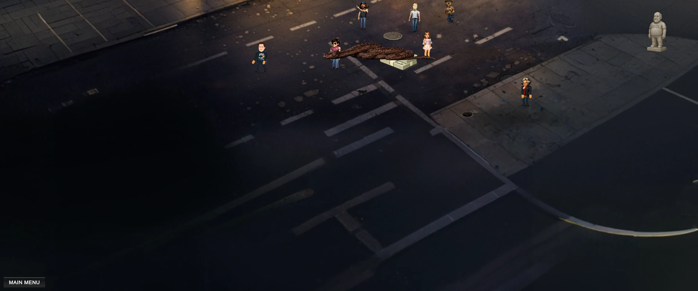
The large snake lies coiled among the people in the middle of the street during a staged encounter.Under UNSE, a small alligator surfaces beside the player at the right edge of the pool.
The underground
Ghost hunting and the strange shops below town
The GhostCrushers venue and SEAL Team K’s supplies are part of the Valley’s underground world. Ghost-hunting equipment includes bait, a beam gun and a ground trap.
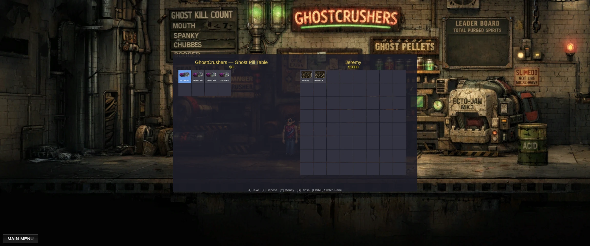
The GhostCrushers locker opens alongside the player’s inventory at headquarters.
Catch a ghost. Settled bait attracts a nearby ghost. The beam can tether a target, while a grounded trap can draw one into its intake. A successful capture produces a collectible capsule that records the ghost’s name.
The time-machine chamber. The chamber has a console and five marked passenger places. Its calibrated setting is a hundred years back. The game checks who is actually standing on the platform, and an incorrect setting endangers those occupants.
The Beaver Eater. The ancient creature appears in the archaeologist’s reconstruction of the dam. In the sewers, the bestiary also includes bats, rats, roaches, spiders, snakes and alligators with different movement and attack patterns.
The time-machine console reads 0100 years back, with the platform visible behind it.
The postal service
Follow Postmaster Josh’s round
Josh flies a postal helicopter to a delivery stop, walks to the address and leaves an addressed package before returning to the aircraft. The route carries on across scene changes.
A sealed parcel addressed to Beaver Valley Municipal Court rests on the pavement.
At the doorstep. A parcel records its destination and intended recipient. The addressee can collect it, and opening it releases its contents into the world.
Taking someone’s post. A package keeps its ownership when another character interacts with it. Witnesses can report theft through the same local police system that handles other incidents.
At the post office. The town has its own postal counter. Josh’s delivery route also reaches addresses outside the immediate neighbourhood.
The shore, the airfield & the sewers
Past the last streetlight
The town extends to Beaver Valley Air, the shoreline and a network of sewers. Under town, follow the floor and watch the painted water. Some creatures can swim where a person has to jump.
Below the UNSE club, a player stands beside one of the sewer pools.
In the water. The small and full-sized alligators swim, pursue and bite. A jaw hold can become a drag. Other underground encounters include snakes and the Beaver Eater.
Beaver Valley Air. Explore the passenger cabins or visit the cockpit. The airliner also appears in the ocean simulation. Cabin emergencies can affect the people still aboard.
At the Watercraft Emporium. The marina sells six kinds of boat, from a single-seat sea kayak to a six-seat Dolphin speedboat. Buy a particular hull, meet companions at its berth and bring it back to the service dock for repairs. The shop also buys eligible vessels in their current condition.
The sales and service counters overlook the marina at the Civilian Watercraft Emporium.
Sandy Shores
A settlement that grows with its residents
Sandy Shores has a port office and an air-service hangar. As the island gains residents it can add up to thirty houses. Population gates also determine which civic buildings can open.
The player stands on the beach outside the Sandy Shores Port Office, with its pier on the right.
New facilities. The jail unlocks at six residents, the hospital at ten, the bar at fifteen, the shop at twenty and the factory at thirty. An island early in its settlement can look very different from a mature one.
Mickey’s journey. The black cat starts on the White House lawn. A campaign decision can spare him or order his capture. The transport branch uses a Fox aircraft and an actual drop before Mickey can settle on Sandy Shores.
Returning to the mainland. Arrivals and departures depend on the craft you brought. A docked ship can be boarded again while it remains moored. Aircraft have landing and parking checks before an occupant can disembark.
War, Versus & the dojo
Choose your post
War starts with a squad battle. At the Grand FOB, an intelligence map ties assignments to terrain, tracks mission results and updates who holds ground. The comms operator can schedule support before the squad deploys.
A parachute deployment over the river crossing trenches in War Mode.
At the base. Use the Grand FOB as a base between deployments. Your battle result can move a mission or change ownership of the sector. An individual outpost or structure may be left in ruins. A soldier advances through a 29-rank ladder in the current playthrough. Lower-ranking soldiers can salute a superior at the base.
At the dojo or in Versus. Namasensei’s dojo runs martial-arts brackets. There are nine ranks from white to black belt, with a separate final fight for black. Versus lets people or AI take the opposing slots for a bout outside the Story casualty system.
War Mode
Between battles at the Grand FOB
After a mission the base gives the squad somewhere to recover and decide what to do next. A visit to intelligence changes what is on offer on the campaign map.
A campaign map and briefing table inside Grand FOB Intelligence.
Intel and command. The map displays friendly, contested and enemy ground. Select a mission at a tile, read the briefing and return after the battle to see how the result changed the map. Prisoner intelligence can reveal enemy locations.
Supply and recovery. Visit the quartermaster, armory and mess hall between deployments. Admit wounded squad members to the infirmary. Each night at the barracks advances their care by a day and restores up to 25% of maximum health to each of your surviving limbs. After two off-duty days, command orders another mission.
Mission support. Select an active order in the communications room. The first support package for that mission is free. Additional artillery barrages cost $500, precision missile strikes cost $750 and heavy bombing runs cost $950. Support executes after the squad arrives at the selected sector.
The brig. Detention, interrogation, patrols and guards are part of the base. Interview a prisoner for intelligence or offer them a place on your side. General Asshat has his own objectives at headquarters.
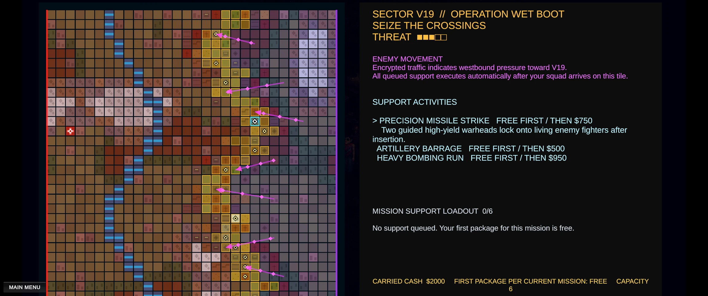
The communications board lists support choices and prices for Operation Wet Boot.
Beaver Valley Air
Board a flight out of town
Buy a ticket, check the seat class and go through the boarding gate. First class and economy have different cabins and different journeys. A seat sold for Washington or Russia in economy can take you to the war front.
The player in a first-class cabin aboard Beaver Valley Air.
Cabin and cockpit. Walk through the aircraft’s connected interiors while the flight tracks its regional route. The airport, hangar and runway are separate locations you can visit on the ground.
A cabin emergency. A hull puncture can drop the pressure. Oxygen supplies matter to the passengers, and an onboard explosion can start a countdown to a crash in the ocean.
Ocean Operations. The airliner also exists as an aircraft in the ocean world, where altitude, landing gear and a grounded arrival have their own rules.
Ocean Operations
Naval combat
Take command of a ship, submarine or aircraft from a mission’s roster. Escort the Capybara ferry, hunt for the Otter submarine or put a carrier group to sea. Your side’s sensor tracks, crew and surviving equipment determine which orders you can give.